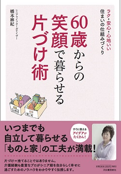

橋本 麻紀（はしもと・まき）
高松高校 昭和５７年卒
(Last updated:2019.11)

プロフィール
出版社勤務後、独立。
現在ランチボックス代表
出版・広告メディアで編集・執筆を行う。
『IKEAのかんたんDIY』(ワック)、『健康寿命を延ばすリフォーム』(オレンジページ)、『片づけと収納がらくになる仕組みづくり ライフオーガナイズ』(主婦と生活社)、『小学生のための楽しい片づけ』(葉月出版)など、手がけた本多数。
2009年から米国発祥の片づけのプロの手法「ライフオーガナイズ」をはじめ、整理収納やファイリングのスキルを学ぶ。
92歳の義母(介護施設入所中)との18年におよぶ同居生活を経て、70歳の夫、20歳の娘の3人暮らし。
体力・気力・認知機能が衰えつつあるシニア世代が「自立した暮らし」を維持するには、住まいを整えることと、「忘れ物・探し物ゼロ」の「もの」の管理術が必須と実感。
メディア、サポートサービス、セミナーを通して、「ラク・安心・心地いいシニアライフ」を応援する「シニアにやさしいお片づけ」を提唱中。
取得資格
マスターライフオーガナイザー、ライフオーガナイザー1級、福祉住環境コーディネーター2級、整理収納アドバイザー１級、ファイリングデザイナー2級
自著
『60歳からの笑顔で暮らせる片づけ術
ラク・安心・心地いい 住まいの仕組みづくり』（河出書房新社）